进行中，尚未达到目标图。先调整山体与溪谷，再验证主路、琴庭支路，最后统一植被与城堡。当前正式入口为 r71，右岸曲径与下游溪流已重新布置；当前版本完整巡游待复核；原源与被拒绝版本保留。
主路：右岸花径 → 桥右端 → 桥左端 → 开放农门 → 左侧曲折入堡。支路：桥前右岸分岔 → 沿溪右岸上山 → 半山琴庭。城堡已移到西侧 (-14,5)，琴庭仍在 (30,12)。
打开当前正式场景 · 组件几何检查（不等于游戏验收） · 实际状态与缺项
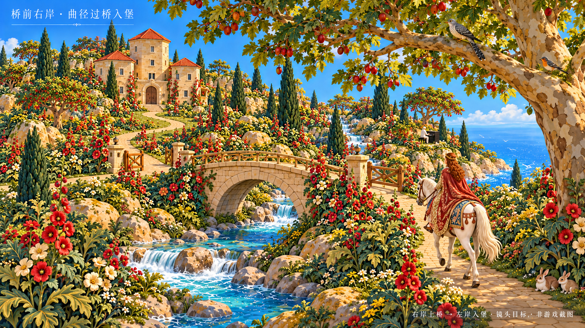
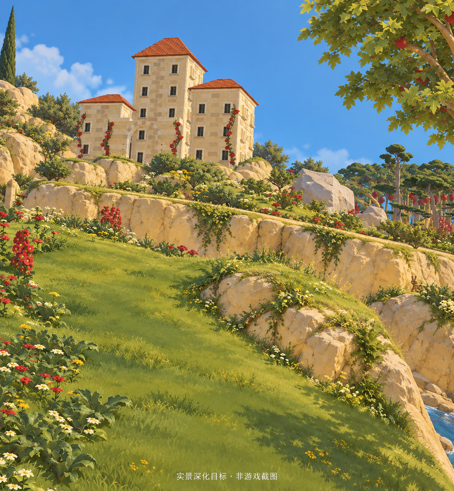
本轮已结束，保留当前正式接入和所有源快照。山体细节、植被与城堡距离认可目标仍有明显差距。当前 r71 完整往返、骑乘坡度实走及 E 交互尚未验收；最后浏览器读取失败，不能以旧版记录补充为通过。
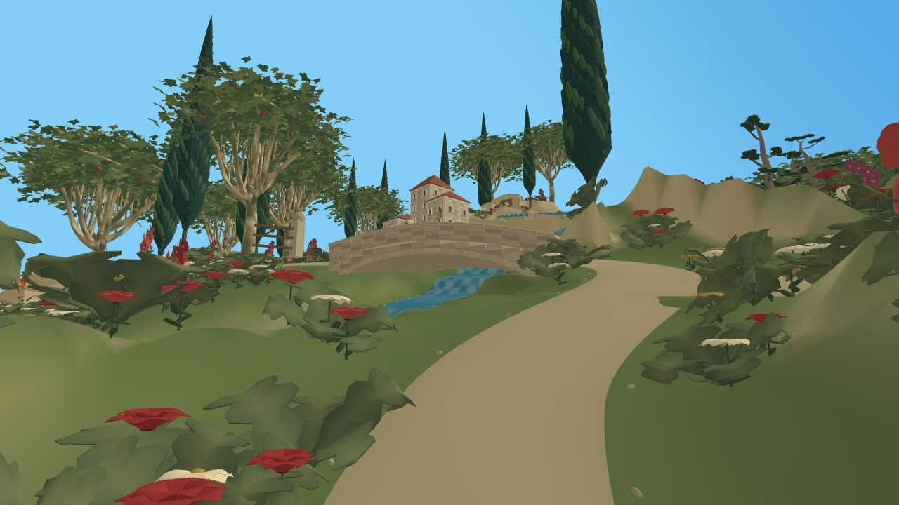
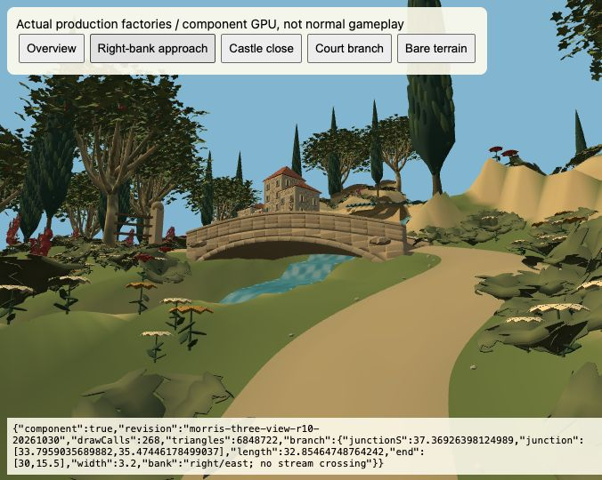
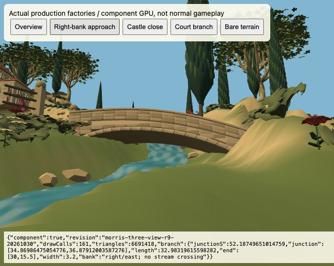
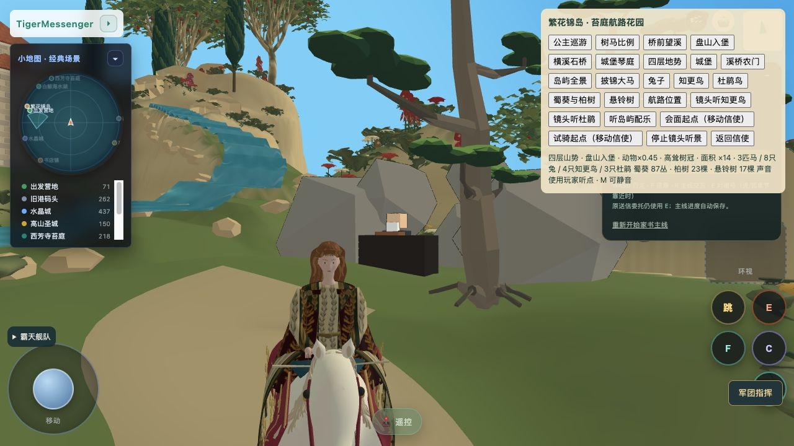
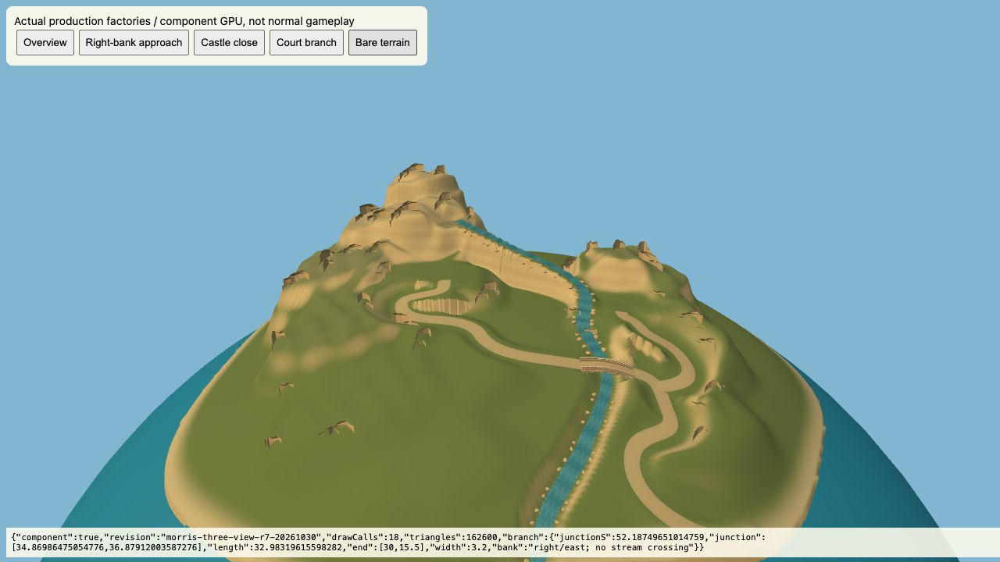
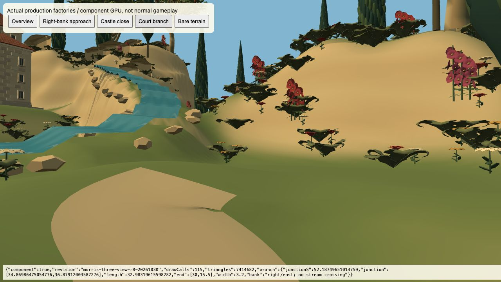
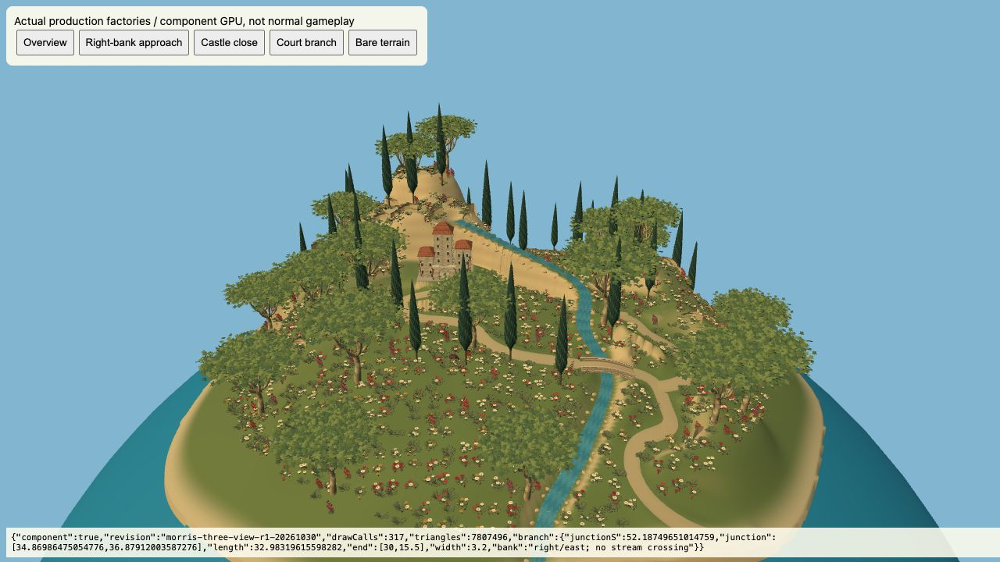
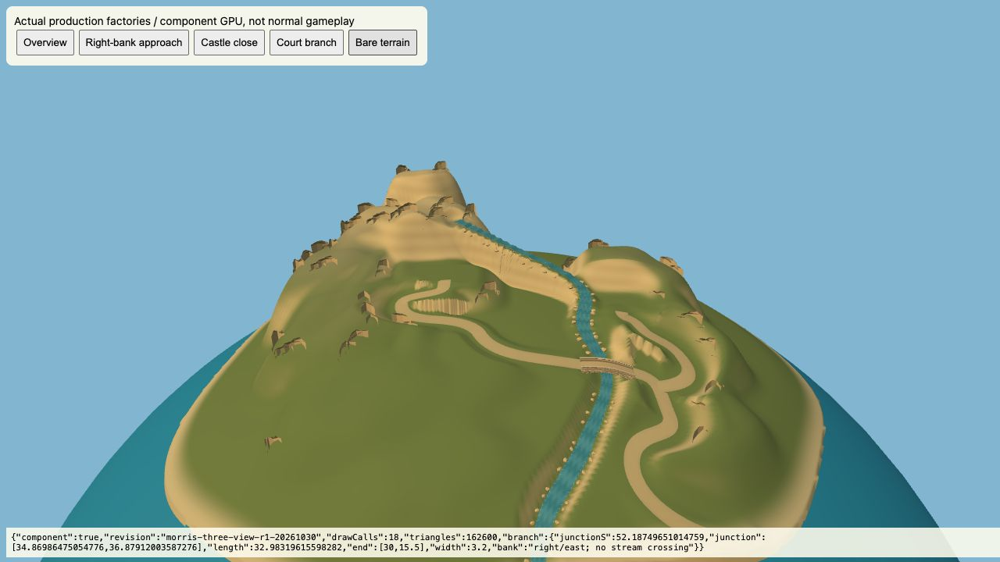
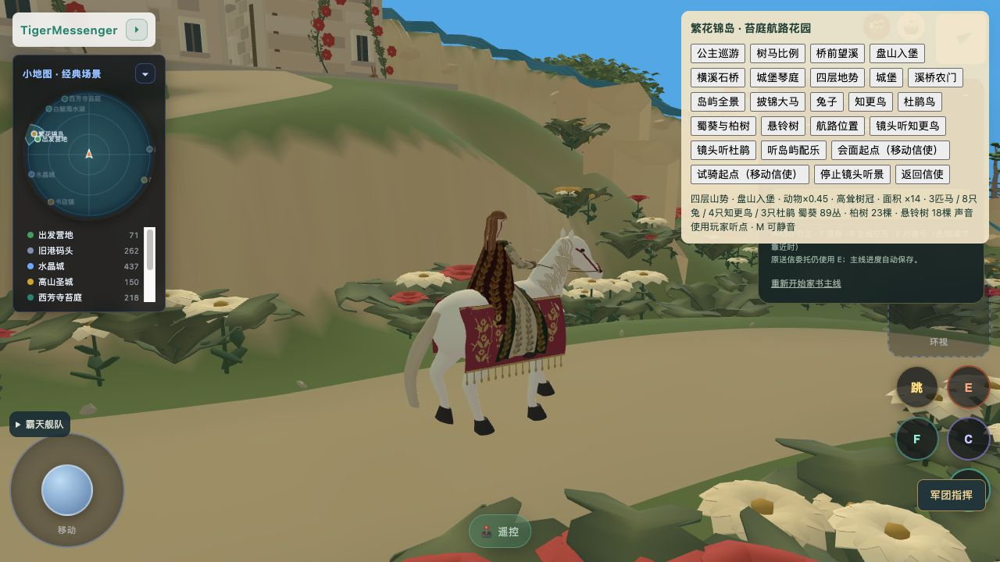
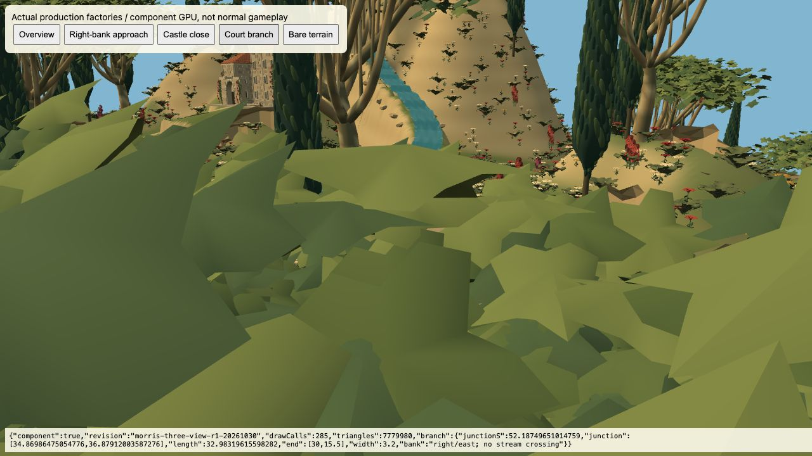
最新数值路线检查通过；主路最大径向坡度约 14%，支路约 9.92%。控制器模拟 11 项通过，包含桥与琴庭路径、停马对话和恢复。模拟未加载 GLB，不替代正式完整骑行。正式场景保留 254 个铁路保护采样点，实际列车通行仍待查。
路线检查 · 控制器模拟 · 正式场景采样 · 紧凑文字 JEV 记录（非视觉验收）